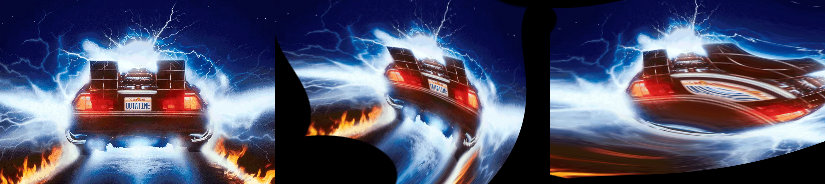
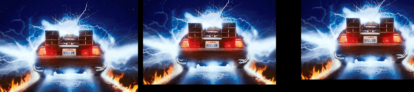
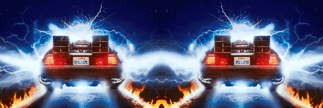
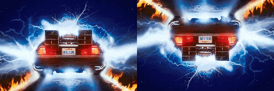
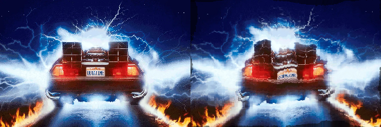
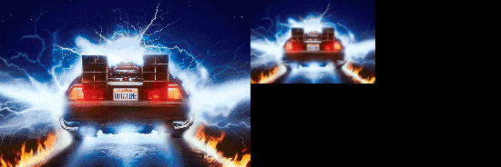
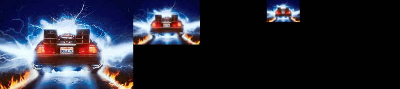

kornia.geometry.transform#
The functions in this section perform various geometrical transformations of 2D images.
Warp operators#
- kornia.geometry.transform.warp_perspective(src, M, dsize, mode='bilinear', padding_mode='zeros', align_corners=True, fill_value=torch.zeros(3))[source]#
Apply a perspective transformation to an image.

The function warp_perspective transforms the source image using the specified matrix:
\[\text{dst} (x, y) = \text{src} \left( \frac{M^{-1}_{11} x + M^{-1}_{12} y + M^{-1}_{13}}{M^{-1}_{31} x + M^{-1}_{32} y + M^{-1}_{33}} , \frac{M^{-1}_{21} x + M^{-1}_{22} y + M^{-1}_{23}}{M^{-1}_{31} x + M^{-1}_{32} y + M^{-1}_{33}} \right )\]- Parameters
src (
Tensor) – input image with shape \((B, C, H, W)\).M (
Tensor) – transformation matrix with shape \((B, 3, 3)\).dsize (
Tuple[int,int]) – size of the output image (height, width).mode (
str, optional) – interpolation mode to calculate output values'bilinear'|'nearest'. Default:'bilinear'padding_mode (
str, optional) – padding mode for outside grid values'zeros'|'border'|'reflection'|'fill'. Default:'zeros'align_corners (
bool, optional) – interpolation flag. Default:Truefill_value (
Tensor, optional) – tensor of shape \((3)\) that fills the padding area. Only supported for RGB. Default:torch.zeros(3)
- Return type
- Returns
the warped input image \((B, C, H, W)\).
Example
>>> img = torch.rand(1, 4, 5, 6) >>> H = torch.eye(3)[None] >>> out = warp_perspective(img, H, (4, 2), align_corners=True) >>> print(out.shape) torch.Size([1, 4, 4, 2])
Note
This function is often used in conjunction with
get_perspective_transform().Note
See a working example here.
- kornia.geometry.transform.warp_perspective3d(src, M, dsize, flags='bilinear', border_mode='zeros', align_corners=False)[source]#
Apply a perspective transformation to an image.
The function warp_perspective transforms the source image using the specified matrix:
\[\text{dst} (x, y) = \text{src} \left( \frac{M_{11} x + M_{12} y + M_{13}}{M_{31} x + M_{32} y + M_{33}} , \frac{M_{21} x + M_{22} y + M_{23}}{M_{31} x + M_{32} y + M_{33}} \right )\]- Parameters
src (
Tensor) – input image with shape \((B, C, D, H, W)\).M (
Tensor) – transformation matrix with shape \((B, 4, 4)\).dsize (
Tuple[int,int,int]) – size of the output image (height, width).flags (
str, optional) – interpolation mode to calculate output values'bilinear'|'nearest'. Default:'bilinear'border_mode (
str, optional) – padding mode for outside grid values'zeros'|'border'|'reflection'. Default:'zeros'align_corners (
bool, optional) – interpolation flag. Default:False
- Return type
- Returns
the warped input image \((B, C, D, H, W)\).
Note
This function is often used in conjunction with
get_perspective_transform3d().
- kornia.geometry.transform.warp_affine(src, M, dsize, mode='bilinear', padding_mode='zeros', align_corners=True, fill_value=torch.zeros(3))[source]#
Apply an affine transformation to a tensor.
The function warp_affine transforms the source tensor using the specified matrix:
\[\text{dst}(x, y) = \text{src} \left( M_{11} x + M_{12} y + M_{13} , M_{21} x + M_{22} y + M_{23} \right )\]- Parameters
src (
Tensor) – input tensor of shape \((B, C, H, W)\).M (
Tensor) – affine transformation of shape \((B, 2, 3)\).dsize (
Tuple[int,int]) – size of the output image (height, width).mode (
str, optional) – interpolation mode to calculate output values'bilinear'|'nearest'. Default:'bilinear'padding_mode (
str, optional) – padding mode for outside grid values'zeros'|'border'|'reflection'|'fill'. Default:'zeros'align_corners (
bool, optional) – mode for grid_generation. Default:Truefill_value (
Tensor, optional) – tensor of shape \((3)\) that fills the padding area. Only supported for RGB. Default:torch.zeros(3)
- Return type
- Returns
the warped tensor with shape \((B, C, H, W)\).
Note
This function is often used in conjunction with
get_rotation_matrix2d(),get_shear_matrix2d(),get_affine_matrix2d(),invert_affine_transform().Note
See a working example here.
Example
>>> img = torch.rand(1, 4, 5, 6) >>> A = torch.eye(2, 3)[None] >>> out = warp_affine(img, A, (4, 2), align_corners=True) >>> print(out.shape) torch.Size([1, 4, 4, 2])
- kornia.geometry.transform.warp_affine3d(src, M, dsize, flags='bilinear', padding_mode='zeros', align_corners=True)[source]#
Apply a projective transformation a to 3d tensor.
Warning
This API signature it is experimental and might suffer some changes in the future.
- Parameters
src (
Tensor) – input tensor of shape \((B, C, D, H, W)\).M (
Tensor) – projective transformation matrix of shape \((B, 3, 4)\).dsize (
Tuple[int,int,int]) – size of the output image (depth, height, width).mode – interpolation mode to calculate output values
'bilinear'|'nearest'.padding_mode (
str, optional) – padding mode for outside grid values'zeros'|'border'|'reflection'. Default:'zeros'align_corners (
bool, optional) – mode for grid_generation. Default:True
- Returns
the warped 3d tensor with shape \((B, C, D, H, W)\).
- Return type
Note
This function is often used in conjunction with
get_perspective_transform3d().
- kornia.geometry.transform.warp_image_tps(image, kernel_centers, kernel_weights, affine_weights, align_corners=False)[source]#
Warp an image tensor according to the thin plate spline transform defined by kernel centers, kernel weights, and affine weights.
The transform is applied to each pixel coordinate in the output image to obtain a point in the input image for interpolation of the output pixel. So the TPS parameters should correspond to a warp from output space to input space.
The input image is a \((B, C, H, W)\) tensor. The kernel centers, kernel weight and affine weights are the same as in warp_points_tps.
- Parameters
image (
Tensor) – input image tensor \((B, C, H, W)\).kernel_centers (
Tensor) – kernel center points \((B, K, 2)\).kernel_weights (
Tensor) – tensor of kernl weights \((B, K, 2)\).affine_weights (
Tensor) – tensor of affine weights \((B, 3, 2)\).align_corners (
bool, optional) – interpolation flag used by grid_sample. Default:False
- Return type
- Returns
warped image tensor \((B, C, H, W)\).
Example
>>> points_src = torch.rand(1, 5, 2) >>> points_dst = torch.rand(1, 5, 2) >>> image = torch.rand(1, 3, 32, 32) >>> # note that we are getting the reverse transform: dst -> src >>> kernel_weights, affine_weights = get_tps_transform(points_dst, points_src) >>> warped_image = warp_image_tps(image, points_src, kernel_weights, affine_weights)
Note
This function is often used in conjunction with
get_tps_transform().
- kornia.geometry.transform.warp_points_tps(points_src, kernel_centers, kernel_weights, affine_weights)[source]#
Warp a tensor of coordinate points using the thin plate spline defined by kernel points, kernel weights, and affine weights.
The source points should be a \((B, N, 2)\) tensor of \((x, y)\) coordinates. The kernel centers are a \((B, K, 2)\) tensor of \((x, y)\) coordinates. The kernel weights are a \((B, K, 2)\) tensor, and the affine weights are a \((B, 3, 2)\) tensor. For the weight tensors, tensor[…, 0] contains the weights for the x-transform and tensor[…, 1] the weights for the y-transform.
- Parameters
- Return type
- Returns
The \((B, N, 2)\) tensor of warped source points, from applying the TPS transform.
Example
>>> points_src = torch.rand(1, 5, 2) >>> points_dst = torch.rand(1, 5, 2) >>> kernel_weights, affine_weights = get_tps_transform(points_src, points_dst) >>> warped = warp_points_tps(points_src, points_dst, kernel_weights, affine_weights) >>> warped_correct = torch.allclose(warped, points_dst)
Note
This function is often used in conjunction with
get_tps_transform().
- kornia.geometry.transform.remap(image, map_x, map_y, mode='bilinear', padding_mode='zeros', align_corners=None, normalized_coordinates=False)[source]#
Apply a generic geometrical transformation to an image tensor.

The function remap transforms the source tensor using the specified map:
\[\text{dst}(x, y) = \text{src}(map_x(x, y), map_y(x, y))\]- Parameters
image (
Tensor) – the tensor to remap with shape (B, C, H, W). Where C is the number of channels.map_x (
Tensor) – the flow in the x-direction in pixel coordinates. The tensor must be in the shape of (B, H, W).map_y (
Tensor) – the flow in the y-direction in pixel coordinates. The tensor must be in the shape of (B, H, W).mode (
str, optional) – interpolation mode to calculate output values'bilinear'|'nearest'. Default:'bilinear'padding_mode (
str, optional) – padding mode for outside grid values'zeros'|'border'|'reflection'. Default:'zeros'align_corners (
Optional[bool], optional) – mode for grid_generation. Default:Nonenormalized_coordinates (
bool, optional) – whether the input coordinates are normalized in the range of [-1, 1]. Default:False
- Return type
- Returns
the warped tensor with same shape as the input grid maps.
Example
>>> import torch >>> from kornia.utils import create_meshgrid >>> grid = create_meshgrid(2, 2, False) # 1x2x2x2 >>> grid += 1 # apply offset in both directions >>> input = torch.ones(1, 1, 2, 2) >>> remap(input, grid[..., 0], grid[..., 1], align_corners=True) # 1x1x2x2 tensor([[[[1., 0.], [0., 0.]]]])
Note
This function is often used in conjunction with
kornia.utils.create_meshgrid().
Image 2d transforms#
- kornia.geometry.transform.affine(tensor, matrix, mode='bilinear', padding_mode='zeros', align_corners=True)[source]#
Apply an affine transformation to the image.
- Parameters
tensor (
Tensor) – The image tensor to be warped in shapes of \((H, W)\), \((D, H, W)\) and \((B, C, H, W)\).matrix (
Tensor) – The 2x3 affine transformation matrix.mode (
str, optional) – interpolation mode to calculate output values'bilinear'|'nearest'. Default:'bilinear'padding_mode (
str, optional) – padding mode for outside grid values'zeros'|'border'|'reflection'. Default:'zeros'align_corners (
bool, optional) – interpolation flag. Default:True
- Return type
- Returns
The warped image with the same shape as the input.
Example
>>> img = torch.rand(1, 2, 3, 5) >>> aff = torch.eye(2, 3)[None] >>> out = affine(img, aff) >>> print(out.shape) torch.Size([1, 2, 3, 5])
- kornia.geometry.transform.rotate(tensor, angle, center=None, mode='bilinear', padding_mode='zeros', align_corners=True)[source]#
Rotate the tensor anti-clockwise about the center.
- Parameters
tensor (
Tensor) – The image tensor to be warped in shapes of \((B, C, H, W)\).angle (
Tensor) – The angle through which to rotate. The tensor must have a shape of (B), where B is batch size.center (
Optional[Tensor], optional) – The center through which to rotate. The tensor must have a shape of (B, 2), where B is batch size and last dimension contains cx and cy. Default:Nonemode (
str, optional) – interpolation mode to calculate output values'bilinear'|'nearest'. Default:'bilinear'padding_mode (
str, optional) – padding mode for outside grid values'zeros'|'border'|'reflection'. Default:'zeros'align_corners (
bool, optional) – interpolation flag. Default:True
- Return type
- Returns
The rotated tensor with shape as input.
Note
See a working example here.
Example
>>> img = torch.rand(1, 3, 4, 4) >>> angle = torch.tensor([90.]) >>> out = rotate(img, angle) >>> print(out.shape) torch.Size([1, 3, 4, 4])
- kornia.geometry.transform.translate(tensor, translation, mode='bilinear', padding_mode='zeros', align_corners=True)[source]#
Translate the tensor in pixel units.
- Parameters
tensor (
Tensor) – The image tensor to be warped in shapes of \((B, C, H, W)\).translation (
Tensor) – tensor containing the amount of pixels to translate in the x and y direction. The tensor must have a shape of (B, 2), where B is batch size, last dimension contains dx dy.mode (
str, optional) – interpolation mode to calculate output values'bilinear'|'nearest'. Default:'bilinear'padding_mode (
str, optional) – padding mode for outside grid values'zeros'|'border'|'reflection'. Default:'zeros'align_corners (
bool, optional) – interpolation flag. Default:True
- Return type
- Returns
The translated tensor with shape as input.
Example
>>> img = torch.rand(1, 3, 4, 4) >>> translation = torch.tensor([[1., 0.]]) >>> out = translate(img, translation) >>> print(out.shape) torch.Size([1, 3, 4, 4])
- kornia.geometry.transform.scale(tensor, scale_factor, center=None, mode='bilinear', padding_mode='zeros', align_corners=True)[source]#
Scale the tensor by a factor.
- Parameters
tensor (
Tensor) – The image tensor to be warped in shapes of \((B, C, H, W)\).scale_factor (
Tensor) – The scale factor apply. The tensor must have a shape of (B) or (B, 2), where B is batch size. If (B), isotropic scaling will perform. If (B, 2), x-y-direction specific scaling will perform.center (
Optional[Tensor], optional) – The center through which to scale. The tensor must have a shape of (B, 2), where B is batch size and last dimension contains cx and cy. Default:Nonemode (
str, optional) – interpolation mode to calculate output values'bilinear'|'nearest'. Default:'bilinear'padding_mode (
str, optional) – padding mode for outside grid values'zeros'|'border'|'reflection'. Default:'zeros'align_corners (
bool, optional) – interpolation flag. Default:True
- Return type
- Returns
The scaled tensor with the same shape as the input.
Example
>>> img = torch.rand(1, 3, 4, 4) >>> scale_factor = torch.tensor([[2., 2.]]) >>> out = scale(img, scale_factor) >>> print(out.shape) torch.Size([1, 3, 4, 4])
- kornia.geometry.transform.shear(tensor, shear, mode='bilinear', padding_mode='zeros', align_corners=False)[source]#
Shear the tensor.
- Parameters
tensor (
Tensor) – The image tensor to be skewed with shape of \((B, C, H, W)\).shear (
Tensor) – tensor containing the angle to shear in the x and y direction. The tensor must have a shape of (B, 2), where B is batch size, last dimension contains shx shy.mode (
str, optional) – interpolation mode to calculate output values'bilinear'|'nearest'. Default:'bilinear'padding_mode (
str, optional) – padding mode for outside grid values'zeros'|'border'|'reflection'. Default:'zeros'align_corners (
bool, optional) – interpolation flag. Default:False
- Return type
- Returns
The skewed tensor with shape same as the input.
Example
>>> img = torch.rand(1, 3, 4, 4) >>> shear_factor = torch.tensor([[0.5, 0.0]]) >>> out = shear(img, shear_factor) >>> print(out.shape) torch.Size([1, 3, 4, 4])
- kornia.geometry.transform.hflip(input)[source]#
Horizontally flip a tensor image or a batch of tensor images.
Input must be a tensor of shape (C, H, W) or a batch of tensors \((*, C, H, W)\).
- kornia.geometry.transform.vflip(input)[source]#
Vertically flip a tensor image or a batch of tensor images.

Input must be a tensor of shape (C, H, W) or a batch of tensors \((*, C, H, W)\).
- kornia.geometry.transform.rot180(input)[source]#
Rotate a tensor image or a batch of tensor images 180 degrees.
Input must be a tensor of shape (C, H, W) or a batch of tensors \((*, C, H, W)\).
- kornia.geometry.transform.resize(input, size, interpolation='bilinear', align_corners=None, side='short', antialias=False)[source]#
Resize the input torch.Tensor to the given size.

- Parameters
tensor – The image tensor to be skewed with shape of \((..., H, W)\). … means there can be any number of dimensions.
size (
Union[int,Tuple[int,int]]) – Desired output size. If size is a sequence like (h, w), output size will be matched to this. If size is an int, smaller edge of the image will be matched to this number. i.e, if height > width, then image will be rescaled to (size * height / width, size)interpolation (
str, optional) – algorithm used for upsampling:'nearest'|'linear'|'bilinear'| ‘bicubic’ | ‘trilinear’ | ‘area’. Default:'bilinear'align_corners (
Optional[bool], optional) – interpolation flag. Default:Noneside (
str, optional) – Corresponding side ifsizeis an integer. Can be one of'short','long','vert', or'horz'. Default:'short'antialias (
bool, optional) – if True, then image will be filtered with Gaussian before downscaling. No effect for upscaling. Default:False
- Return type
- Returns
The resized tensor with the shape as the specified size.
Example
>>> img = torch.rand(1, 3, 4, 4) >>> out = resize(img, (6, 8)) >>> print(out.shape) torch.Size([1, 3, 6, 8])
- kornia.geometry.transform.rescale(input, factor, interpolation='bilinear', align_corners=None, antialias=False)[source]#
Rescale the input torch.Tensor with the given factor.
- Parameters
input (
Tensor) – The image tensor to be scale with shape of \((B, C, H, W)\).factor (
Union[float,Tuple[float,float]]) – Desired scaling factor in each direction. If scalar, the value is used for both the x- and y-direction.interpolation (
str, optional) – algorithm used for upsampling:'nearest'|'linear'|'bilinear'|'bicubic'|'trilinear'|'area'. Default:'bilinear'align_corners (
Optional[bool], optional) – interpolation flag. Default:Noneside – Corresponding side if
sizeis an integer. Can be one of'short','long','vert', or'horz'.antialias (
bool, optional) – if True, then image will be filtered with Gaussian before downscaling. No effect for upscaling. Default:False
- Return type
- Returns
The rescaled tensor with the shape as the specified size.
Example
>>> img = torch.rand(1, 3, 4, 4) >>> out = rescale(img, (2, 3)) >>> print(out.shape) torch.Size([1, 3, 8, 12])
- kornia.geometry.transform.elastic_transform2d(image, noise, kernel_size=(63, 63), sigma=(32.0, 32.0), alpha=(1.0, 1.0), align_corners=False, mode='bilinear', padding_mode='zeros')[source]#
Apply elastic transform of images as described in [SSP03].
- Parameters
image (
Tensor) – Input image to be transformed with shape \((B, C, H, W)\).noise (
Tensor) – Noise image used to spatially transform the input image. Same resolution as the input image with shape \((B, 2, H, W)\). The coordinates order it is expected to be in x-y.kernel_size (
Tuple[int,int], optional) – the size of the Gaussian kernel. Default:(63, 63)sigma (
Tuple[float,float], optional) – The standard deviation of the Gaussian in the y and x directions, respectively. Larger sigma results in smaller pixel displacements. Default:(32.0, 32.0)alpha (
Tuple[float,float], optional) – The scaling factor that controls the intensity of the deformation in the y and x directions, respectively. Default:(1.0, 1.0)align_corners (
bool, optional) – Interpolation flag used by`grid_sample`. Default:Falsemode (
str, optional) – Interpolation mode used by`grid_sample`. Either'bilinear'or'nearest'. Default:'bilinear'padding_mode (
str, optional) – The padding used by`grid_sample`. Either'zeros','border'or'refection'. Default:'zeros'
- Return type
- Returns
the elastically transformed input image with shape \((B,C,H,W)\).
Example
>>> image = torch.rand(1, 3, 5, 5) >>> noise = torch.rand(1, 2, 5, 5, requires_grad=True) >>> image_hat = elastic_transform2d(image, noise, (3, 3)) >>> image_hat.mean().backward()
>>> image = torch.rand(1, 3, 5, 5) >>> noise = torch.rand(1, 2, 5, 5) >>> sigma = torch.tensor([4., 4.], requires_grad=True) >>> image_hat = elastic_transform2d(image, noise, (3, 3), sigma) >>> image_hat.mean().backward()
>>> image = torch.rand(1, 3, 5, 5) >>> noise = torch.rand(1, 2, 5, 5) >>> alpha = torch.tensor([16., 32.], requires_grad=True) >>> image_hat = elastic_transform2d(image, noise, (3, 3), alpha=alpha) >>> image_hat.mean().backward()
- kornia.geometry.transform.pyrdown(input, border_type='reflect', align_corners=False, factor=2.0)[source]#
Blur a tensor and downsamples it.
- Parameters
input (
Tensor) – the tensor to be downsampled.border_type (
str, optional) – the padding mode to be applied before convolving. The expected modes are:'constant','reflect','replicate'or'circular'. Default:'reflect'align_corners (
bool, optional) – interpolation flag. Default:Falsefactor (
float, optional) – the downsampling factor Default:2.0
- Return type
- Returns
the downsampled tensor.
Examples
>>> input = torch.arange(16, dtype=torch.float32).reshape(1, 1, 4, 4) >>> pyrdown(input, align_corners=True) tensor([[[[ 3.7500, 5.2500], [ 9.7500, 11.2500]]]])
- kornia.geometry.transform.pyrup(input, border_type='reflect', align_corners=False)[source]#
Upsample a tensor and then blurs it.

- Parameters
- Return type
- Returns
the downsampled tensor.
Examples
>>> input = torch.arange(4, dtype=torch.float32).reshape(1, 1, 2, 2) >>> pyrup(input, align_corners=True) tensor([[[[0.7500, 0.8750, 1.1250, 1.2500], [1.0000, 1.1250, 1.3750, 1.5000], [1.5000, 1.6250, 1.8750, 2.0000], [1.7500, 1.8750, 2.1250, 2.2500]]]])
- kornia.geometry.transform.build_pyramid(input, max_level, border_type='reflect', align_corners=False)[source]#
Construct the Gaussian pyramid for an image.
The function constructs a vector of images and builds the Gaussian pyramid by recursively applying pyrDown to the previously built pyramid layers.
- Parameters
input (
Tensor) – the tensor to be used to construct the pyramid.max_level (
int) – 0-based index of the last (the smallest) pyramid layer. It must be non-negative.border_type (
str, optional) – the padding mode to be applied before convolving. The expected modes are:'constant','reflect','replicate'or'circular'. Default:'reflect'align_corners (
bool, optional) – interpolation flag. Default:False
- Shape:
Input: \((B, C, H, W)\)
Output \([(B, C, H, W), (B, C, H/2, W/2), ...]\)
Matrix transformations#
- kornia.geometry.transform.get_perspective_transform(points_src, points_dst)[source]#
Calculate a perspective transform from four pairs of the corresponding points.
The algorithm is a vanilla implementation of the Direct Linear transform (DLT). See more: https://www.cs.cmu.edu/~16385/s17/Slides/10.2_2D_Alignment__DLT.pdf
The function calculates the matrix of a perspective transform that maps from the source to destination points:
\[\begin{split}\begin{bmatrix} x^{'} \\ y^{'} \\ 1 \\ \end{bmatrix} = \begin{bmatrix} h_1 & h_2 & h_3 \\ h_4 & h_5 & h_6 \\ h_7 & h_8 & h_9 \\ \end{bmatrix} \cdot \begin{bmatrix} x \\ y \\ 1 \\ \end{bmatrix}\end{split}\]- Parameters
- Return type
- Returns
the perspective transformation with shape \((B, 3, 3)\).
Note
This function is often used in conjunction with
warp_perspective().Example
>>> x1 = torch.tensor([[[0., 0.], [1., 0.], [1., 1.], [0., 1.]]]) >>> x2 = torch.tensor([[[1., 0.], [0., 0.], [0., 1.], [1., 1.]]]) >>> x2_trans_x1 = get_perspective_transform(x1, x2)
- kornia.geometry.transform.get_perspective_transform3d(src, dst)[source]#
Calculate a 3d perspective transform from four pairs of the corresponding points.
The function calculates the matrix of a perspective transform so that:
\[\begin{split}\begin{bmatrix} t_{i}x_{i}^{'} \\ t_{i}y_{i}^{'} \\ t_{i}z_{i}^{'} \\ t_{i} \\ \end{bmatrix} = \textbf{map_matrix} \cdot \begin{bmatrix} x_{i} \\ y_{i} \\ z_{i} \\ 1 \\ \end{bmatrix}\end{split}\]where
\[dst(i) = (x_{i}^{'},y_{i}^{'},z_{i}^{'}), src(i) = (x_{i}, y_{i}, z_{i}), i = 0,1,2,5,7\]Concrete math is as below:
\[\[ u_i =\frac{c_{00} * x_i + c_{01} * y_i + c_{02} * z_i + c_{03}} {c_{30} * x_i + c_{31} * y_i + c_{32} * z_i + c_{33}} \] \[ v_i =\frac{c_{10} * x_i + c_{11} * y_i + c_{12} * z_i + c_{13}} {c_{30} * x_i + c_{31} * y_i + c_{32} * z_i + c_{33}} \] \[ w_i =\frac{c_{20} * x_i + c_{21} * y_i + c_{22} * z_i + c_{23}} {c_{30} * x_i + c_{31} * y_i + c_{32} * z_i + c_{33}} \]\]\[\begin{split}\begin{pmatrix} x_0 & y_0 & z_0 & 1 & 0 & 0 & 0 & 0 & 0 & 0 & 0 & 0 & -x_0*u_0 & -y_0*u_0 & -z_0 * u_0 \\ x_1 & y_1 & z_1 & 1 & 0 & 0 & 0 & 0 & 0 & 0 & 0 & 0 & -x_1*u_1 & -y_1*u_1 & -z_1 * u_1 \\ x_2 & y_2 & z_2 & 1 & 0 & 0 & 0 & 0 & 0 & 0 & 0 & 0 & -x_2*u_2 & -y_2*u_2 & -z_2 * u_2 \\ x_5 & y_5 & z_5 & 1 & 0 & 0 & 0 & 0 & 0 & 0 & 0 & 0 & -x_5*u_5 & -y_5*u_5 & -z_5 * u_5 \\ x_7 & y_7 & z_7 & 1 & 0 & 0 & 0 & 0 & 0 & 0 & 0 & 0 & -x_7*u_7 & -y_7*u_7 & -z_7 * u_7 \\ 0 & 0 & 0 & 0 & x_0 & y_0 & z_0 & 1 & 0 & 0 & 0 & 0 & -x_0*v_0 & -y_0*v_0 & -z_0 * v_0 \\ 0 & 0 & 0 & 0 & x_1 & y_1 & z_1 & 1 & 0 & 0 & 0 & 0 & -x_1*v_1 & -y_1*v_1 & -z_1 * v_1 \\ 0 & 0 & 0 & 0 & x_2 & y_2 & z_2 & 1 & 0 & 0 & 0 & 0 & -x_2*v_2 & -y_2*v_2 & -z_2 * v_2 \\ 0 & 0 & 0 & 0 & x_5 & y_5 & z_5 & 1 & 0 & 0 & 0 & 0 & -x_5*v_5 & -y_5*v_5 & -z_5 * v_5 \\ 0 & 0 & 0 & 0 & x_7 & y_7 & z_7 & 1 & 0 & 0 & 0 & 0 & -x_7*v_7 & -y_7*v_7 & -z_7 * v_7 \\ 0 & 0 & 0 & 0 & 0 & 0 & 0 & 0 & x_0 & y_0 & z_0 & 1 & -x_0*w_0 & -y_0*w_0 & -z_0 * w_0 \\ 0 & 0 & 0 & 0 & 0 & 0 & 0 & 0 & x_1 & y_1 & z_1 & 1 & -x_1*w_1 & -y_1*w_1 & -z_1 * w_1 \\ 0 & 0 & 0 & 0 & 0 & 0 & 0 & 0 & x_2 & y_2 & z_2 & 1 & -x_2*w_2 & -y_2*w_2 & -z_2 * w_2 \\ 0 & 0 & 0 & 0 & 0 & 0 & 0 & 0 & x_5 & y_5 & z_5 & 1 & -x_5*w_5 & -y_5*w_5 & -z_5 * w_5 \\ 0 & 0 & 0 & 0 & 0 & 0 & 0 & 0 & x_7 & y_7 & z_7 & 1 & -x_7*w_7 & -y_7*w_7 & -z_7 * w_7 \\ \end{pmatrix}\end{split}\]- Parameters
- Return type
- Returns
the perspective transformation with shape \((B, 4, 4)\).
Note
This function is often used in conjunction with
warp_perspective3d().
- kornia.geometry.transform.get_projective_transform(center, angles, scales)[source]#
Calculate the projection matrix for a 3D rotation.
Warning
This API signature it is experimental and might suffer some changes in the future.
The function computes the projection matrix given the center and angles per axis.
- Parameters
center (
Tensor) – center of the rotation (x,y,z) in the source with shape \((B, 3)\).angles (
Tensor) – angle axis vector containing the rotation angles in degrees in the form of (rx, ry, rz) with shape \((B, 3)\). Internally it calls Rodrigues to compute the rotation matrix from axis-angle.scales (
Tensor) – scale factor for x-y-z-directions with shape \((B, 3)\).
- Return type
- Returns
the projection matrix of 3D rotation with shape \((B, 3, 4)\).
Note
This function is often used in conjunction with
warp_affine3d().
- kornia.geometry.transform.get_rotation_matrix2d(center, angle, scale)[source]#
Calculate an affine matrix of 2D rotation.
The function calculates the following matrix:
\[\begin{split}\begin{bmatrix} \alpha & \beta & (1 - \alpha) \cdot \text{x} - \beta \cdot \text{y} \\ -\beta & \alpha & \beta \cdot \text{x} + (1 - \alpha) \cdot \text{y} \end{bmatrix}\end{split}\]where
\[\begin{split}\alpha = \text{scale} \cdot cos(\text{angle}) \\ \beta = \text{scale} \cdot sin(\text{angle})\end{split}\]The transformation maps the rotation center to itself If this is not the target, adjust the shift.
- Parameters
center (
Tensor) – center of the rotation in the source image with shape \((B, 2)\).angle (
Tensor) – rotation angle in degrees. Positive values mean counter-clockwise rotation (the coordinate origin is assumed to be the top-left corner) with shape \((B)\).scale (
Tensor) – scale factor for x, y scaling with shape \((B, 2)\).
- Return type
- Returns
the affine matrix of 2D rotation with shape \((B, 2, 3)\).
Example
>>> center = torch.zeros(1, 2) >>> scale = torch.ones((1, 2)) >>> angle = 45. * torch.ones(1) >>> get_rotation_matrix2d(center, angle, scale) tensor([[[ 0.7071, 0.7071, 0.0000], [-0.7071, 0.7071, 0.0000]]])
Note
This function is often used in conjunction with
warp_affine().
- kornia.geometry.transform.get_shear_matrix2d(center, sx=None, sy=None)[source]#
Compose shear matrix Bx4x4 from the components.
Note: Ordered shearing, shear x-axis then y-axis.
\[\begin{split}\begin{bmatrix} 1 & b \\ a & ab + 1 \\ \end{bmatrix}\end{split}\]- Parameters
- Returns
params to be passed to the affine transformation with shape \((B, 3, 3)\).
Examples
>>> rng = torch.manual_seed(0) >>> sx = torch.randn(1) >>> sx tensor([1.5410]) >>> center = torch.tensor([[0., 0.]]) # Bx2 >>> get_shear_matrix2d(center, sx=sx) tensor([[[ 1.0000, -33.5468, 0.0000], [ -0.0000, 1.0000, 0.0000], [ 0.0000, 0.0000, 1.0000]]])
Note
This function is often used in conjunction with
warp_affine(),warp_perspective().
- kornia.geometry.transform.get_shear_matrix3d(center, sxy=None, sxz=None, syx=None, syz=None, szx=None, szy=None)[source]#
Compose shear matrix Bx4x4 from the components. Note: Ordered shearing, shear x-axis then y-axis then z-axis.
\[\begin{split}\begin{bmatrix} 1 & o & r & oy + rz \\ m & p & s & mx + py + sz -y \\ n & q & t & nx + qy + tz -z \\ 0 & 0 & 0 & 1 \\ \end{bmatrix} Where: m = S_{xy} n = S_{xz} o = S_{yx} p = S_{xy}S_{yx} + 1 q = S_{xz}S_{yx} + S_{yz} r = S_{zx} + S_{yx}S_{zy} s = S_{xy}S_{zx} + (S_{xy}S_{yx} + 1)S_{zy} t = S_{xz}S_{zx} + (S_{xz}S_{yx} + S_{yz})S_{zy} + 1\end{split}\]- Params:
center: shearing center coordinates of (x, y, z). sxy: shearing degree along x axis, towards y plane. sxz: shearing degree along x axis, towards z plane. syx: shearing degree along y axis, towards x plane. syz: shearing degree along y axis, towards z plane. szx: shearing degree along z axis, towards x plane. szy: shearing degree along z axis, towards y plane.
- Returns
params to be passed to the affine transformation.
Examples
>>> rng = torch.manual_seed(0) >>> sxy, sxz, syx, syz = torch.randn(4, 1) >>> sxy, sxz, syx, syz (tensor([1.5410]), tensor([-0.2934]), tensor([-2.1788]), tensor([0.5684])) >>> center = torch.tensor([[0., 0., 0.]]) # Bx3 >>> get_shear_matrix3d(center, sxy=sxy, sxz=sxz, syx=syx, syz=syz) tensor([[[ 1.0000, -1.4369, 0.0000, 0.0000], [-33.5468, 49.2039, 0.0000, 0.0000], [ 0.3022, -1.0729, 1.0000, 0.0000], [ 0.0000, 0.0000, 0.0000, 1.0000]]])
Note
This function is often used in conjunction with
warp_perspective3d().
- kornia.geometry.transform.get_affine_matrix2d(translations, center, scale, angle, sx=None, sy=None)[source]#
Compose affine matrix from the components.
- Parameters
translations (
Tensor) – tensor containing the translation vector with shape \((B, 2)\).center (
Tensor) – tensor containing the center vector with shape \((B, 2)\).scale (
Tensor) – tensor containing the scale factor with shape \((B, 2)\).angle (
Tensor) – tensor of angles in degrees \((B)\).sx (
Optional[Tensor], optional) – tensor containing the shear factor in the x-direction with shape \((B)\). Default:Nonesy (
Optional[Tensor], optional) – tensor containing the shear factor in the y-direction with shape \((B)\). Default:None
- Return type
- Returns
the affine transformation matrix \((B, 3, 3)\).
Note
This function is often used in conjunction with
warp_affine(),warp_perspective().
- kornia.geometry.transform.get_affine_matrix3d(translations, center, scale, angles, sxy=None, sxz=None, syx=None, syz=None, szx=None, szy=None)[source]#
Compose 3d affine matrix from the components.
- Parameters
translations (
Tensor) – tensor containing the translation vector (dx,dy,dz) with shape \((B, 3)\).center (
Tensor) – tensor containing the center vector (x,y,z) with shape \((B, 3)\).scale (
Tensor) – tensor containing the scale factor with shape \((B)\).angle – angle axis vector containing the rotation angles in degrees in the form of (rx, ry, rz) with shape \((B, 3)\). Internally it calls Rodrigues to compute the rotation matrix from axis-angle.
sxy (
Optional[Tensor], optional) – tensor containing the shear factor in the xy-direction with shape \((B)\). Default:Nonesxz (
Optional[Tensor], optional) – tensor containing the shear factor in the xz-direction with shape \((B)\). Default:Nonesyx (
Optional[Tensor], optional) – tensor containing the shear factor in the yx-direction with shape \((B)\). Default:Nonesyz (
Optional[Tensor], optional) – tensor containing the shear factor in the yz-direction with shape \((B)\). Default:Noneszx (
Optional[Tensor], optional) – tensor containing the shear factor in the zx-direction with shape \((B)\). Default:Noneszy (
Optional[Tensor], optional) – tensor containing the shear factor in the zy-direction with shape \((B)\). Default:None
- Return type
- Returns
the 3d affine transformation matrix \((B, 3, 3)\).
Note
This function is often used in conjunction with
warp_perspective().
- kornia.geometry.transform.invert_affine_transform(matrix)[source]#
Invert an affine transformation.
The function computes an inverse affine transformation represented by 2×3 matrix:
\[\begin{split}\begin{bmatrix} a_{11} & a_{12} & b_{1} \\ a_{21} & a_{22} & b_{2} \\ \end{bmatrix}\end{split}\]The result is also a 2×3 matrix of the same type as M.
- Parameters
matrix (
Tensor) – original affine transform. The tensor must be in the shape of \((B, 2, 3)\).- Return type
- Returns
the reverse affine transform with shape \((B, 2, 3)\).
Note
This function is often used in conjunction with
warp_affine().
- kornia.geometry.transform.projection_from_Rt(rmat, tvec)[source]#
Compute the projection matrix from Rotation and translation.
Warning
This API signature it is experimental and might suffer some changes in the future.
Concatenates the batch of rotations and translations such that \(P = [R | t]\).
- kornia.geometry.transform.get_tps_transform(points_src, points_dst)[source]#
Compute the TPS transform parameters that warp source points to target points.
The input to this function is a tensor of \((x, y)\) source points \((B, N, 2)\) and a corresponding tensor of target \((x, y)\) points \((B, N, 2)\).
- Parameters
- Return type
- Returns
- \((B, N, 2)\) tensor of kernel weights and \((B, 3, 2)\)
tensor of affine weights. The last dimension contains the x-transform and y-transform weights as separate columns.
Example
>>> points_src = torch.rand(1, 5, 2) >>> points_dst = torch.rand(1, 5, 2) >>> kernel_weights, affine_weights = get_tps_transform(points_src, points_dst)
Note
This function is often used in conjunction with
warp_points_tps(),warp_image_tps().
Crop operators#
- kornia.geometry.transform.crop_by_boxes(tensor, src_box, dst_box, mode='bilinear', padding_mode='zeros', align_corners=True, validate_boxes=True)[source]#
Perform crop transform on 2D images (4D tensor) given two bounding boxes.
Given an input tensor, this function selected the interested areas by the provided bounding boxes (src_box). Then the selected areas would be fitted into the targeted bounding boxes (dst_box) by a perspective transformation. So far, the ragged tensor is not supported by PyTorch right now. This function hereby requires the bounding boxes in a batch must be rectangles with same width and height.
- Parameters
tensor (
Tensor) – the 2D image tensor with shape (B, C, H, W).src_box (
Tensor) – a tensor with shape (B, 4, 2) containing the coordinates of the bounding boxes to be extracted. The tensor must have the shape of Bx4x2, where each box is defined in the clockwise order: top-left, top-right, bottom-right and bottom-left. The coordinates must be in x, y order.dst_box (
Tensor) – a tensor with shape (B, 4, 2) containing the coordinates of the bounding boxes to be placed. The tensor must have the shape of Bx4x2, where each box is defined in the clockwise order: top-left, top-right, bottom-right and bottom-left. The coordinates must be in x, y order.mode (
str, optional) – interpolation mode to calculate output values'bilinear'|'nearest'. Default:'bilinear'padding_mode (
str, optional) – padding mode for outside grid values'zeros'|'border'|'reflection'. Default:'zeros'align_corners (
bool, optional) – mode for grid_generation. Default:Truevalidate_boxes (
bool, optional) – flag to perform validation on boxes. Default:True
- Returns
the output tensor with patches.
- Return type
Examples
>>> input = torch.arange(16, dtype=torch.float32).reshape((1, 1, 4, 4)) >>> src_box = torch.tensor([[ ... [1., 1.], ... [2., 1.], ... [2., 2.], ... [1., 2.], ... ]]) # 1x4x2 >>> dst_box = torch.tensor([[ ... [0., 0.], ... [1., 0.], ... [1., 1.], ... [0., 1.], ... ]]) # 1x4x2 >>> crop_by_boxes(input, src_box, dst_box, align_corners=True) tensor([[[[ 5.0000, 6.0000], [ 9.0000, 10.0000]]]])
Note
If the src_box is smaller than dst_box, the following error will be thrown. RuntimeError: solve_cpu: For batch 0: U(2,2) is zero, singular U.
- kornia.geometry.transform.center_crop(tensor, size, mode='bilinear', padding_mode='zeros', align_corners=True)[source]#
Crop the 2D images (4D tensor) from the center.
- Parameters
tensor (
Tensor) – the 2D image tensor with shape (B, C, H, W).size (
Tuple[int,int]) – a tuple with the expected height and width of the output patch.mode (
str, optional) – interpolation mode to calculate output values'bilinear'|'nearest'. Default:'bilinear'padding_mode (
str, optional) – padding mode for outside grid values'zeros'|'border'|'reflection'. Default:'zeros'align_corners (
bool, optional) – mode for grid_generation. Default:True
- Return type
- Returns
the output tensor with patches.
Examples
>>> input = torch.tensor([[[ ... [1., 2., 3., 4.], ... [5., 6., 7., 8.], ... [9., 10., 11., 12.], ... [13., 14., 15., 16.], ... ]]]) >>> center_crop(input, (2, 4), mode='nearest', align_corners=True) tensor([[[[ 5., 6., 7., 8.], [ 9., 10., 11., 12.]]]])
- kornia.geometry.transform.crop_and_resize(tensor, boxes, size, mode='bilinear', padding_mode='zeros', align_corners=True)[source]#
Extract crops from 2D images (4D tensor) and resize given a bounding box.
- Parameters
tensor (
Tensor) – the 2D image tensor with shape (B, C, H, W).boxes (
Tensor) – a tensor containing the coordinates of the bounding boxes to be extracted. The tensor must have the shape of Bx4x2, where each box is defined in the following (clockwise) order: top-left, top-right, bottom-right and bottom-left. The coordinates must be in the x, y order. The coordinates would compose a rectangle with a shape of (N1, N2).size (
Tuple[int,int]) – a tuple with the height and width that will be used to resize the extracted patches.mode (
str, optional) – interpolation mode to calculate output values'bilinear'|'nearest'. Default:'bilinear'padding_mode (
str, optional) – padding mode for outside grid values'zeros'|'border'| ‘reflection’. Default:'zeros'align_corners (
bool, optional) – mode for grid_generation. Default:True
- Returns
tensor containing the patches with shape BxCxN1xN2.
- Return type
Example
>>> input = torch.tensor([[[ ... [1., 2., 3., 4.], ... [5., 6., 7., 8.], ... [9., 10., 11., 12.], ... [13., 14., 15., 16.], ... ]]]) >>> boxes = torch.tensor([[ ... [1., 1.], ... [2., 1.], ... [2., 2.], ... [1., 2.], ... ]]) # 1x4x2 >>> crop_and_resize(input, boxes, (2, 2), mode='nearest', align_corners=True) tensor([[[[ 6., 7.], [10., 11.]]]])
Module#
- class kornia.geometry.transform.Rotate(angle, center=None, mode='bilinear', padding_mode='zeros', align_corners=True)[source]#
Rotate the tensor anti-clockwise about the centre.
- Parameters
angle (
Tensor) – The angle through which to rotate. The tensor must have a shape of (B), where B is batch size.center (
Optional[Tensor], optional) – The center through which to rotate. The tensor must have a shape of (B, 2), where B is batch size and last dimension contains cx and cy. Default:Nonemode (
str, optional) – interpolation mode to calculate output values'bilinear'|'nearest'. Default:'bilinear'padding_mode (
str, optional) – padding mode for outside grid values'zeros'|'border'|'reflection'. Default:'zeros'align_corners (
bool, optional) – interpolation flag. Default:True
- Returns
The rotated tensor with the same shape as the input.
Example
>>> img = torch.rand(1, 3, 4, 4) >>> angle = torch.tensor([90.]) >>> out = Rotate(angle)(img) >>> print(out.shape) torch.Size([1, 3, 4, 4])
- class kornia.geometry.transform.Translate(translation, mode='bilinear', padding_mode='zeros', align_corners=True)[source]#
Translate the tensor in pixel units.
- Parameters
translation (
Tensor) – tensor containing the amount of pixels to translate in the x and y direction. The tensor must have a shape of (B, 2), where B is batch size, last dimension contains dx dy.mode (
str, optional) – interpolation mode to calculate output values'bilinear'|'nearest'. Default:'bilinear'padding_mode (
str, optional) – padding mode for outside grid values'zeros'|'border'|'reflection'. Default:'zeros'align_corners (
bool, optional) – interpolation flag. Default:True
- Returns
The translated tensor with the same shape as the input.
Example
>>> img = torch.rand(1, 3, 4, 4) >>> translation = torch.tensor([[1., 0.]]) >>> out = Translate(translation)(img) >>> print(out.shape) torch.Size([1, 3, 4, 4])
- class kornia.geometry.transform.Scale(scale_factor, center=None, mode='bilinear', padding_mode='zeros', align_corners=True)[source]#
Scale the tensor by a factor.
- Parameters
scale_factor (
Tensor) – The scale factor apply. The tensor must have a shape of (B) or (B, 2), where B is batch size. If (B), isotropic scaling will perform. If (B, 2), x-y-direction specific scaling will perform.center (
Optional[Tensor], optional) – The center through which to scale. The tensor must have a shape of (B, 2), where B is batch size and last dimension contains cx and cy. Default:Nonemode (
str, optional) – interpolation mode to calculate output values'bilinear'|'nearest'. Default:'bilinear'padding_mode (
str, optional) – padding mode for outside grid values'zeros'|'border'|'reflection'. Default:'zeros'align_corners (
bool, optional) – interpolation flag. Default:True
- Returns
The scaled tensor with the same shape as the input.
Example
>>> img = torch.rand(1, 3, 4, 4) >>> scale_factor = torch.tensor([[2., 2.]]) >>> out = Scale(scale_factor)(img) >>> print(out.shape) torch.Size([1, 3, 4, 4])
- class kornia.geometry.transform.Shear(shear, mode='bilinear', padding_mode='zeros', align_corners=True)[source]#
Shear the tensor.
- Parameters
shear (
Tensor) – tensor containing the angle to shear in the x and y direction. The tensor must have a shape of (B, 2), where B is batch size, last dimension contains shx shy.mode (
str, optional) – interpolation mode to calculate output values'bilinear'|'nearest'. Default:'bilinear'padding_mode (
str, optional) – padding mode for outside grid values'zeros'|'border'|'reflection'. Default:'zeros'align_corners (
bool, optional) – interpolation flag. Default:True
- Returns
The skewed tensor with the same shape as the input.
Example
>>> img = torch.rand(1, 3, 4, 4) >>> shear_factor = torch.tensor([[0.5, 0.0]]) >>> out = Shear(shear_factor)(img) >>> print(out.shape) torch.Size([1, 3, 4, 4])
- class kornia.geometry.transform.PyrDown(border_type='reflect', align_corners=False, factor=2.0)[source]#
Blur a tensor and downsamples it.
- Parameters
border_type (
str, optional) – the padding mode to be applied before convolving. The expected modes are:'constant','reflect','replicate'or'circular'. Default:'reflect'align_corners (
bool, optional) – interpolation flag. Default:Falsefactor (
float, optional) – the downsampling factor Default:2.0
- Returns
the downsampled tensor.
- Shape:
Input: \((B, C, H, W)\)
Output: \((B, C, H / 2, W / 2)\)
Examples
>>> input = torch.rand(1, 2, 4, 4) >>> output = PyrDown()(input) # 1x2x2x2
- class kornia.geometry.transform.PyrUp(border_type='reflect', align_corners=False)[source]#
Upsample a tensor and then blurs it.
- Parameters
borde_type – the padding mode to be applied before convolving. The expected modes are:
'constant','reflect','replicate'or'circular'.align_corners (
bool, optional) – interpolation flag. Default:False
- Returns
the upsampled tensor.
- Shape:
Input: \((B, C, H, W)\)
Output: \((B, C, H * 2, W * 2)\)
Examples
>>> input = torch.rand(1, 2, 4, 4) >>> output = PyrUp()(input) # 1x2x8x8
- class kornia.geometry.transform.ScalePyramid(n_levels=3, init_sigma=1.6, min_size=15, double_image=False)[source]#
Create an scale pyramid of image, usually used for local feature detection.
Images are consequently smoothed with Gaussian blur and downscaled.
- Parameters
n_levels (
int, optional) – number of the levels in octave. Default:3init_sigma (
float, optional) – initial blur level. Default:1.6min_size (
int, optional) – the minimum size of the octave in pixels. Default:15double_image (
bool, optional) – add 2x upscaled image as 1st level of pyramid. OpenCV SIFT does this. Default:False
- Returns
images 2nd output: sigmas (coefficients for scale conversion) 3rd output: pixelDists (coefficients for coordinate conversion)
- Return type
1st output
- Shape:
Input: \((B, C, H, W)\)
Output 1st: \([(B, C, NL, H, W), (B, C, NL, H/2, W/2), ...]\)
Output 2nd: \([(B, NL), (B, NL), (B, NL), ...]\)
Output 3rd: \([(B, NL), (B, NL), (B, NL), ...]\)
Examples
>>> input = torch.rand(2, 4, 100, 100) >>> sp, sigmas, pds = ScalePyramid(3, 15)(input)
- class kornia.geometry.transform.Hflip[source]#
Horizontally flip a tensor image or a batch of tensor images.
Input must be a tensor of shape (C, H, W) or a batch of tensors \((*, C, H, W)\).
- Parameters
input – input tensor.
- Returns
The horizontally flipped image tensor.
Examples
>>> hflip = Hflip() >>> input = torch.tensor([[[ ... [0., 0., 0.], ... [0., 0., 0.], ... [0., 1., 1.] ... ]]]) >>> hflip(input) tensor([[[[0., 0., 0.], [0., 0., 0.], [1., 1., 0.]]]])
- class kornia.geometry.transform.Vflip[source]#
Vertically flip a tensor image or a batch of tensor images.
Input must be a tensor of shape (C, H, W) or a batch of tensors \((*, C, H, W)\).
- Parameters
input – input tensor.
- Returns
The vertically flipped image tensor.
Examples
>>> vflip = Vflip() >>> input = torch.tensor([[[ ... [0., 0., 0.], ... [0., 0., 0.], ... [0., 1., 1.] ... ]]]) >>> vflip(input) tensor([[[[0., 1., 1.], [0., 0., 0.], [0., 0., 0.]]]])
- class kornia.geometry.transform.Rot180[source]#
Rotate a tensor image or a batch of tensor images 180 degrees.
Input must be a tensor of shape (C, H, W) or a batch of tensors \((*, C, H, W)\).
- Parameters
input – input tensor.
Examples
>>> rot180 = Rot180() >>> input = torch.tensor([[[ ... [0., 0., 0.], ... [0., 0., 0.], ... [0., 1., 1.] ... ]]]) >>> rot180(input) tensor([[[[1., 1., 0.], [0., 0., 0.], [0., 0., 0.]]]])
- class kornia.geometry.transform.Resize(size, interpolation='bilinear', align_corners=None, side='short', antialias=False)[source]#
Resize the input torch.Tensor to the given size.
- Parameters
size (
Union[int,Tuple[int,int]]) – Desired output size. If size is a sequence like (h, w), output size will be matched to this. If size is an int, smaller edge of the image will be matched to this number. i.e, if height > width, then image will be rescaled to (size * height / width, size)interpolation (
str, optional) – algorithm used for upsampling:'nearest'|'linear'|'bilinear'| ‘bicubic’ | ‘trilinear’ | ‘area’. Default:'bilinear'align_corners (
Optional[bool], optional) – interpolation flag. Default:Noneside (
str, optional) – Corresponding side ifsizeis an integer. Can be one of'short','long','vert', or'horz'. Default:'short'antialias (
bool, optional) – if True, then image will be filtered with Gaussian before downscaling. No effect for upscaling. Default:False
- Returns
The resized tensor with the shape of the given size.
Example
>>> img = torch.rand(1, 3, 4, 4) >>> out = Resize((6, 8))(img) >>> print(out.shape) torch.Size([1, 3, 6, 8])
- class kornia.geometry.transform.Rescale(factor, interpolation='bilinear', align_corners=True, antialias=False)[source]#
Rescale the input torch.Tensor with the given factor.
- Parameters
factor (
Union[float,Tuple[float,float]]) – Desired scaling factor in each direction. If scalar, the value is used for both the x- and y-direction.interpolation (
str, optional) – algorithm used for upsampling:'nearest'|'linear'|'bilinear'|'bicubic'|'trilinear'|'area'. Default:'bilinear'align_corners (
bool, optional) – interpolation flag. Default:Trueside – Corresponding side if
sizeis an integer. Can be one of'short','long','vert', or'horz'.antialias (
bool, optional) – if True, then image will be filtered with Gaussian before downscaling. No effect for upscaling. Default:False
- Returns
The rescaled tensor with the shape according to the given factor.
Example
>>> img = torch.rand(1, 3, 4, 4) >>> out = Rescale((2, 3))(img) >>> print(out.shape) torch.Size([1, 3, 8, 12])
- class kornia.geometry.transform.Affine(angle=None, translation=None, scale_factor=None, shear=None, center=None, mode='bilinear', padding_mode='zeros', align_corners=True)[source]#
Apply multiple elementary affine transforms simultaneously.
- Parameters
angle (
Optional[Tensor], optional) – Angle in degrees for counter-clockwise rotation around the center. The tensor must have a shape of (B), where B is the batch size. Default:Nonetranslation (
Optional[Tensor], optional) – Amount of pixels for translation in x- and y-direction. The tensor must have a shape of (B, 2), where B is the batch size and the last dimension contains dx and dy. Default:Nonescale_factor (
Optional[Tensor], optional) – Factor for scaling. The tensor must have a shape of (B), where B is the batch size. Default:Noneshear (
Optional[Tensor], optional) – Angles in degrees for shearing in x- and y-direction around the center. The tensor must have a shape of (B, 2), where B is the batch size and the last dimension contains sx and sy. Default:Nonecenter (
Optional[Tensor], optional) – Transformation center in pixels. The tensor must have a shape of (B, 2), where B is the batch size and the last dimension contains cx and cy. Defaults to the center of image to be transformed. Default:Nonemode (
str, optional) – interpolation mode to calculate output values'bilinear'|'nearest'. Default:'bilinear'padding_mode (
str, optional) – padding mode for outside grid values'zeros'|'border'|'reflection'. Default:'zeros'align_corners (
bool, optional) – interpolation flag. Default:True
- Raises
RuntimeError – If not one of
angle,translation,scale_factor, orshearis set.- Returns
The transformed tensor with same shape as input.
Example
>>> img = torch.rand(1, 2, 3, 5) >>> angle = 90. * torch.rand(1) >>> out = Affine(angle)(img) >>> print(out.shape) torch.Size([1, 2, 3, 5])
- class kornia.geometry.transform.HomographyWarper(height, width, mode='bilinear', padding_mode='zeros', normalized_coordinates=True, align_corners=False)[source]#
Warp tensors by homographies.
\[X_{dst} = H_{src}^{\{dst\}} * X_{src}\]- Parameters
height (
int) – The height of the destination tensor.width (
int) – The width of the destination tensor.mode (
str, optional) – interpolation mode to calculate output values'bilinear'|'nearest'. Default:'bilinear'padding_mode (
str, optional) – padding mode for outside grid values'zeros'|'border'|'reflection'. Default:'zeros'normalized_coordinates (
bool, optional) – whether to use a grid with normalized coordinates. Default:Truealign_corners (
bool, optional) – interpolation flag. Default:False
Image registration#

- class kornia.geometry.transform.image_registrator.Homography[source]#
Homography geometric model to be used together with ImageRegistrator module for the optimization-based image registration.
- forward()[source]#
Single-batch homography”.
- Return type
- Returns
Homography matrix with shape \((1, 3, 3)\).
- class kornia.geometry.transform.image_registrator.ImageRegistrator(model_type='homography', optimizer=optim.Adam, loss_fn=F.l1_loss, pyramid_levels=5, lr=0.001, num_iterations=100, tolerance=0.0001, warper=None)[source]#
Module, which performs optimization-based image registration.
- Parameters
model_type (optional) – Geometrical model for registration. Can be string or Module. Default:
'homography'optimizer (optional) – optimizer class used for the optimization. Default:
optim.Adamloss_fn (
Callable, optional) – torch loss function. Default:F.l1_losspyramid_levels (
int, optional) – number of scale pyramid levels. Default:5lr (
float, optional) – learning rate for optimization. Default:0.001num_iterations (
int, optional) – maximum number of iterations. Default:100tolerance (
float, optional) – stop optimizing if loss difference is less. default 1e-4. Default:0.0001warper (optional) – if model_type is not string, one needs to provide warper object. Default:
None
Example
>>> from kornia.geometry import ImageRegistrator >>> img_src = torch.rand(1, 1, 32, 32) >>> img_dst = torch.rand(1, 1, 32, 32) >>> registrator = ImageRegistrator('similarity') >>> homo = registrator.register(img_src, img_dst)
- get_single_level_loss(img_src, img_dst, transform_model)[source]#
Warp img_src into img_dst with transform_model and returns loss.
- Return type
- register(src_img, dst_img, verbose=False, output_intermediate_models=False)[source]#
Estimate the tranformation’ which warps src_img into dst_img by gradient descent. The shape of the tensors is not checked, because it may depend on the model, e.g. volume registration
- Parameters
- Return type
- Returns
the transformation between two images, shape depends on the model, typically [1x3x3] tensor for string model_types.
- class kornia.geometry.transform.image_registrator.Similarity(rotation=True, scale=True, shift=True)[source]#
Similarity geometric model to be used together with ImageRegistrator module for the optimization-based image registration.
- Parameters
- forward()[source]#
Single-batch similarity transform”.
- Return type
- Returns
Similarity with shape \((1, 3, 3)\)